Anudeep
Mantravadi
I design, build, and test real hardware. Every project on this page started as a CAD model and ended as something I could hold, instrument, and break on purpose to learn why it failed.
Micro Wire Arc Additive Manufacturing Machine
A 3D Printer Scale Wire Arc Additive Manufacturing machine, built from scratch into a working deposition system. I designed the gantry in SolidWorks, machined and assembled the moving parts, wired three RAMPS driver boards by hand, and tuned the wire feeding mechanism to be consistent through a full deposition process.
Designed the full 3-axis gantry assembly in SolidWorks, consisting of more than 170 components, and exported them into drawings before anything was 3D printed or cut.
The video depicts a bead of metal being deposited at an arc temperature of 1800 C using a brass nozzle as the medium of positive charge and the substrate as the medium of negative charge.
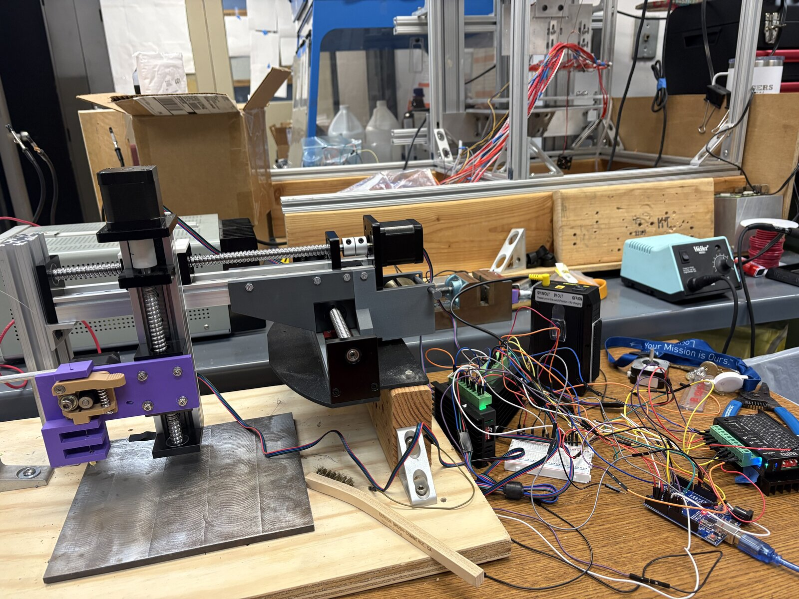
Assembled the 3-axis gantry and calibrated the steppers using Arduino code and manual vernier caliper measurements, checking the percent errors of movement offset on all three axes, and changing the micro-stepping, pitch, and other stepper hardware if necessary before mounting the deposition head.
Ensured 3-axis alignment using a fluid leveler, mounted the Z-axis carriage, and ensured smooth movement of the machine before proceeding to install the extrusion system.
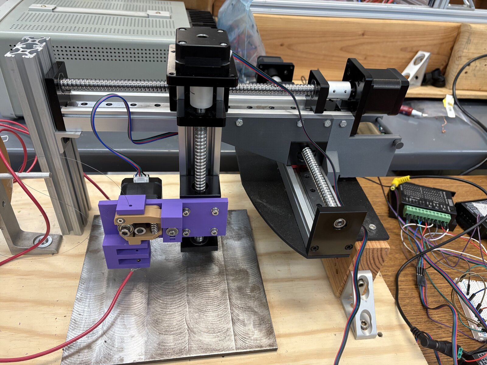
Built the Z-axis lead screw to ensure it supports the weight of the extrusion system, including the stepper motor, through drive torque and Euler analysis.
Iterated the position of the wire spool to ensure no contact of the wire is made between the charged wire and the substrate or the gantry, preventing the risk of a potential short circuit. Wire safety was determined using wire-sag analysis and a bounding-box feature in SolidWorks, known as the dynamic envelope.
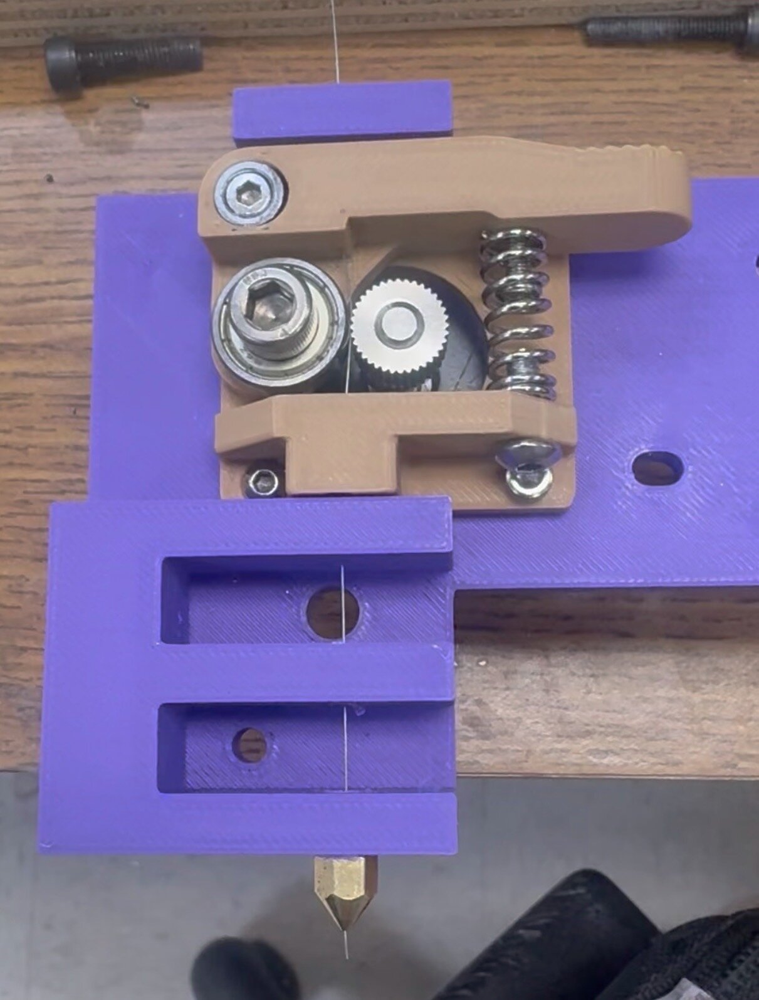
Designed and printed a minimalist and lightweight wire feed extruder housing from scratch, ensuring minimal wire slippage through wire guides, and sized to fit the spring-loaded pinch roller assembly.
Tuned the spring load on the pinch roller until the feed rate stayed consistent across a full deposition cycle.
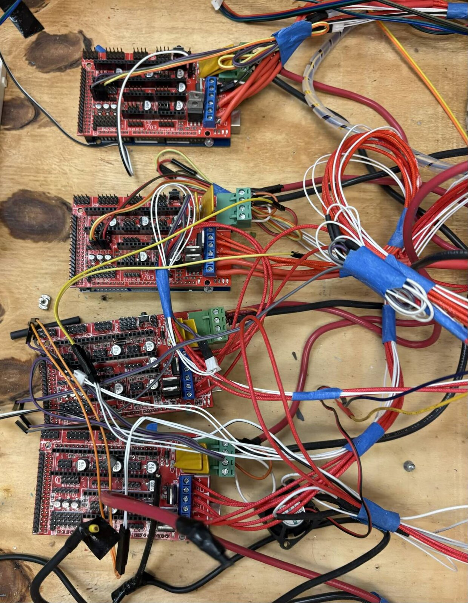
Wired and labeled every connection across four RAMPS driver boards by hand, namely the X, Y, Z, and Extruder stepper motors.
Diagnosed and tested wiring issues during the testing stage by isolating each motor driver in the system before full integration of components.
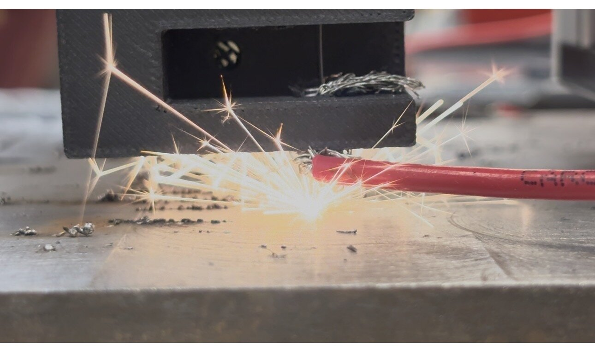
Ran controlled deposition tests and used GD&T documentation in AutoCAD to track how bead geometry changed with each parameter adjustment. Utilized WAAM bead ratios to automate a Python system that, when given the cross-section CSV data, auto-segregates the WAAM beads into nominal, overprint, and underprint data, aiming to support ongoing ML research in the lab.
Physics-Informed Neural Networks for CFD Modeling
An inverse Physics-Informed Neural Network (PINN) developed to infer unknown flow parameters, specifically kinematic viscosity, from little to no velocity measurements. Ground truth data is generated using OpenFOAM, an open-source CFD solver. The PINN directly incorporates the incompressible Navier-Stokes equations into its loss function, enabling it to capture the problem's physics while evaluating the impact of sensor placement and measurement noise.
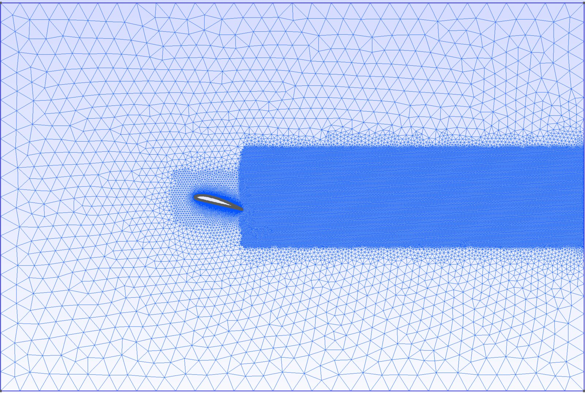
Built the structured boundary-layer mesh in Gmsh from scratch; the imagery shown is a Clark Y Airfoil at an angle of attack of 15 degrees.
Wrote check_patches.py, a Python tool which aims to catch mislabeled boundary patches before any solver runs. The tool was created to refine meshes before the system's memory is exhausted by failed CFD attempts.

Ran 34 total simulations across three turbulence models, four Reynolds number validations, and a 9-angle by 3-Reynolds-number sweep.

Built the PINN architecture in PyTorch and encoded the Navier-Stokes equations directly into the loss function using automatic differentiation.
Reduced the physics-residual loss 2,790 times over training, from 1.1159 to 0.0004, with zero CFD training data used at any point.
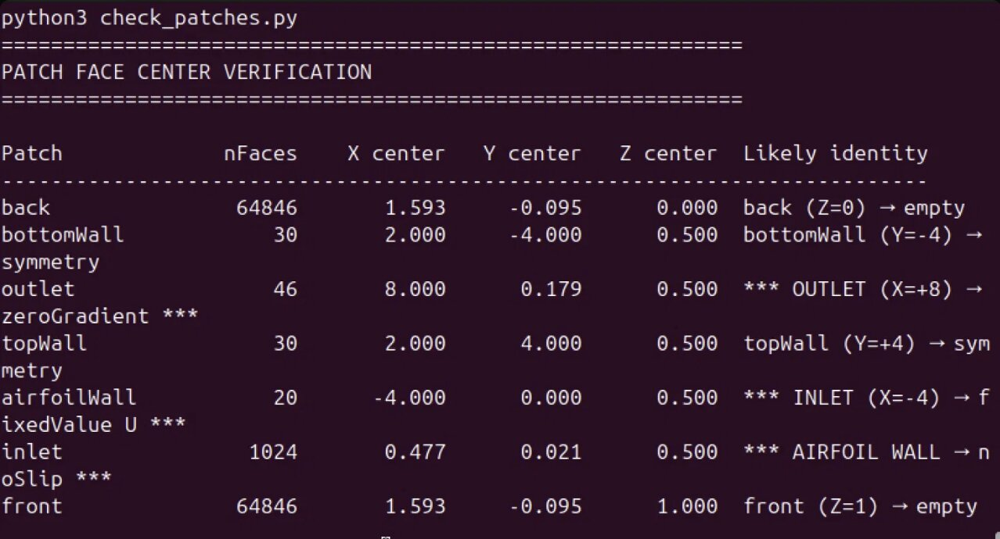
Wrote check_patches.py after finding a real mislabeled inlet and outlet patch myself during an early debug session.
Ran the script before every solver case from then on, catching boundary condition errors before they cost a wasted run.
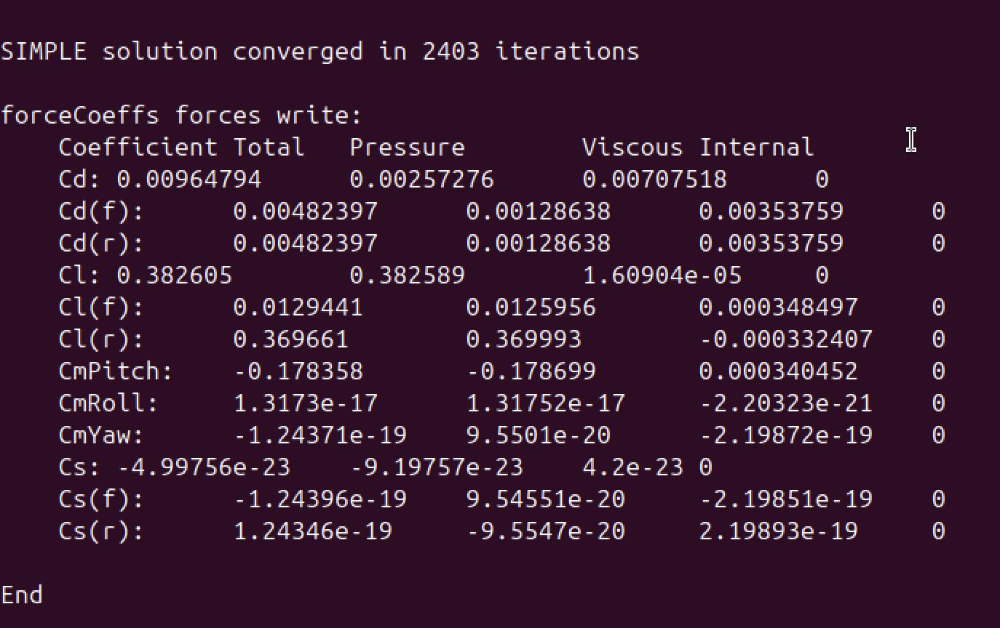
Drove each case to full convergence in simpleFoam, confirming residuals before pulling any force or moment data.
Logged the complete force and moment coefficients for every converged case to feed the XFOIL validation comparison. The results agreed with XFOIL, achieving a 3 percent error in lift coefficient calculations.
Ongoing CFD work includes continuous testing of drag mismatch between CFD and XFOIL, boundary effects propagation, formulating a better loss function, data density, etc.
AIAA Design-Build-Fly: RU Airborne Aircraft
A full aircraft design cycle for AIAA's Design-Build-Fly competition. Constraint and sensitivity analysis sized the airframe against mission requirements, structural FEA was run on every primary load-bearing part before fabrication, and the aircraft was built and flown.
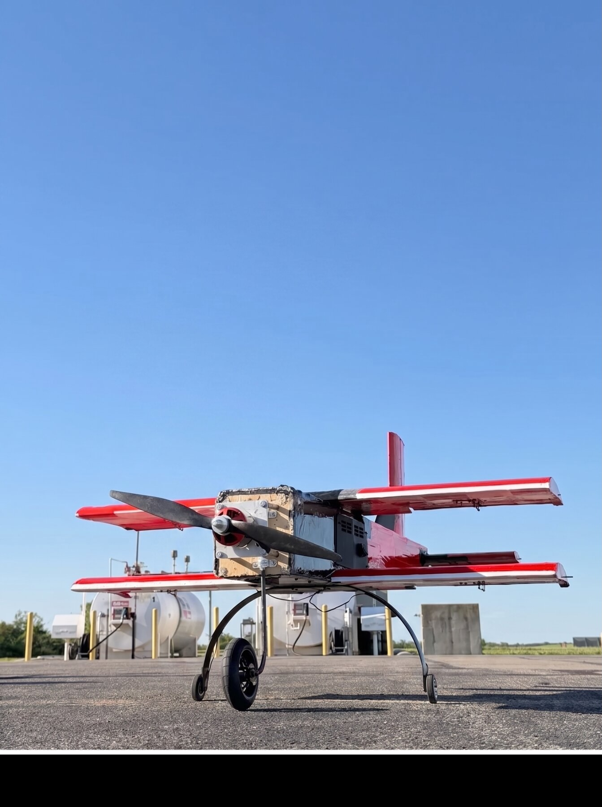
Drove the airframe sizing decision using constraint analysis that fixed thrust-to-weight and wing loading against takeoff distance, cruise speed, and turn load factor at the same time.
Used sensitivity analysis to identify banner length and bank angle as the dominant score components, then directed the design process toward those two parameters specifically.
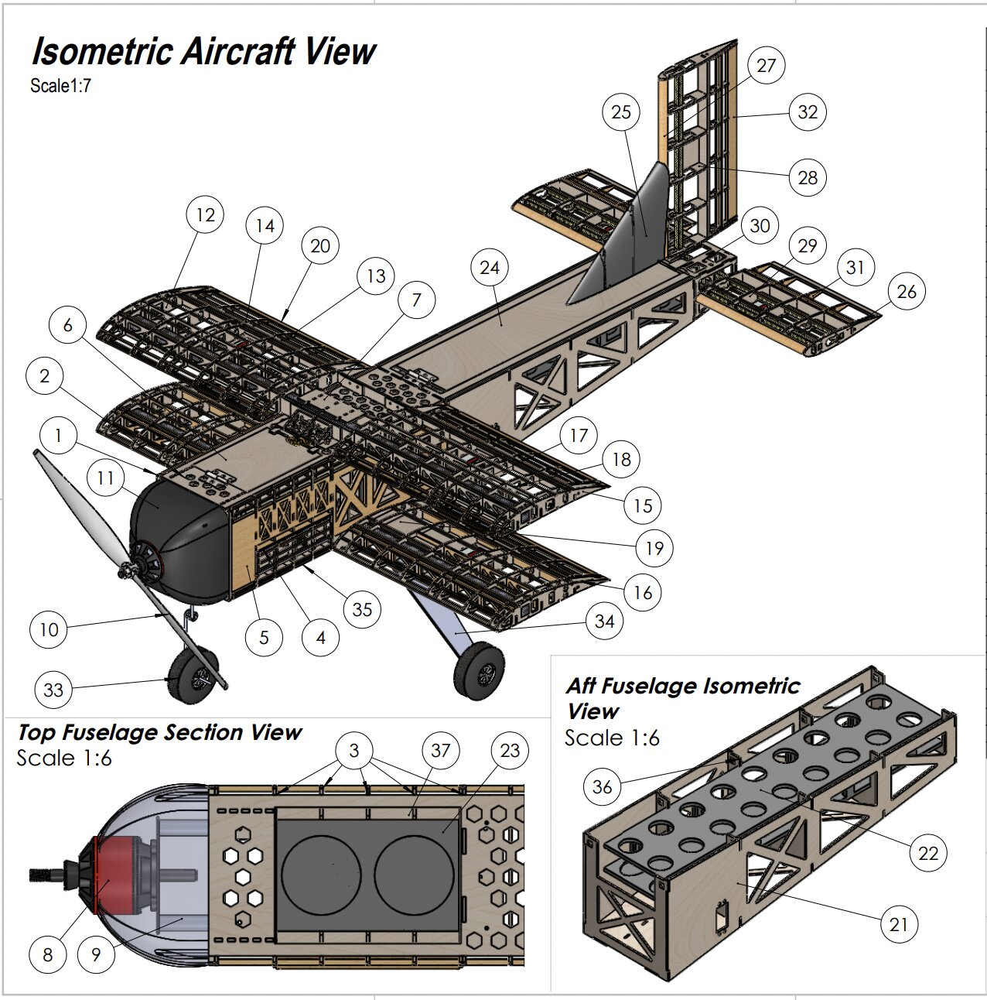
Worked in a diverse team of 18 engineers to model the complete aircraft in SolidWorks through final assembly, covering all 37 labeled components.
Specialized in working on the structural design aspect of the project, working on the wing spar, firewall, and landing gear's CAD and FEA results.
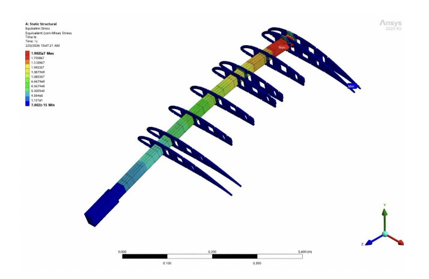
FEA of the wing spar is shown, calculating equivalent von Mises stresses of the component caused by the deformation due to gravity, as the half-wing is a fixed beam.
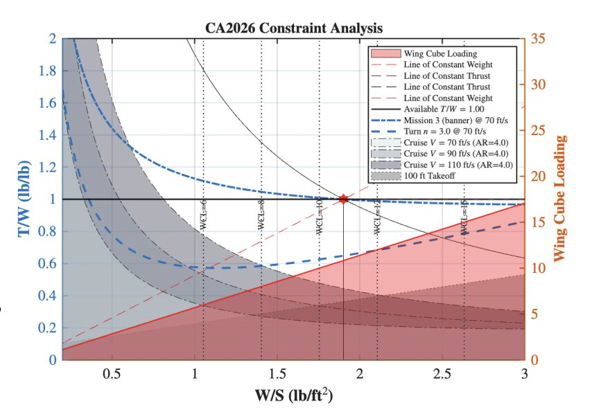
Plotted every mission constraint, takeoff distance, cruise speed, and turn load factor, on one chart to find the single design point that satisfied all three at once.
Used the constraint chart to lock the thrust-to-weight and wing loading values before any structural sizing began.

Checked battery capacity, bank angle, and wingspan independently to find which parameters actually moved the mission score.
Identified banner length and bank angle as the two highest-leverage parameters, then spent the remaining design time on those instead of spreading effort evenly.

Modeled the main landing gear under worst-case landing load and checked deflection passing the clearance before fabrication.
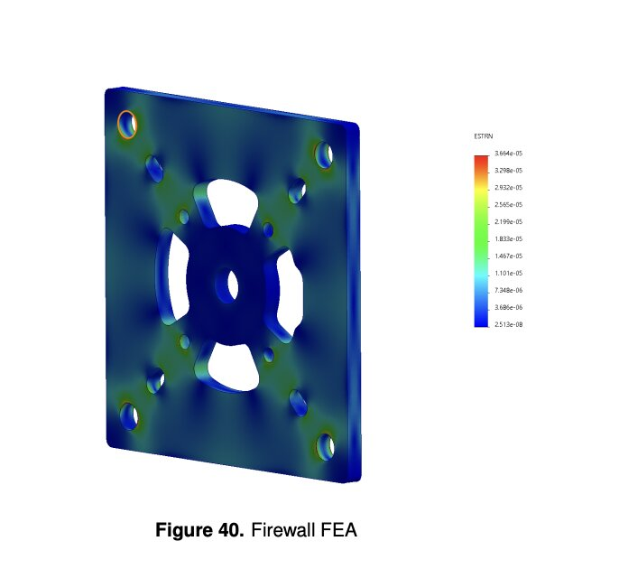
Ran strain analysis on the firewall around every motor mount point to confirm it could hold under vibration loads.
Used the strain map to decide where material could be removed for weight without weakening the mount points.
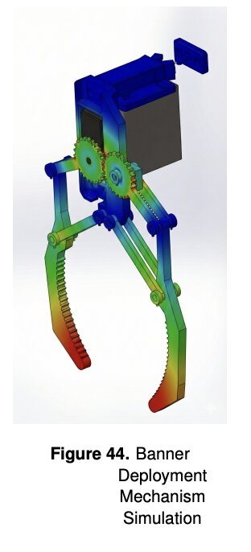
Performed structural analysis on the banner deployment mechanism and simulated its actuation cycle before building the first prototype.
Rotating Detonation Engine, Cold Flow Test Rig
Built a small-scale cold-flow test rig to study the rotating detonation engine wave dynamics without combustion. Compressed air drives through a de Laval nozzle fed by a ring of 45-degree angled injection holes, which change the tangential momentum of the wind, causing a rotating pressure wave around the annulus chamber. Two MPU6050 accelerometer and gyro modules sit on the outer wall, one above the converging section and one below the throat, both recording wave behavior on both sides of the geometry over a pressure range of 3 to 90 PSI.

Built the 12-plane pattern in SolidWorks to set every injection hole at exactly 45 degrees around the radial pattern.
Verified the hole pattern's symmetry in CAD before committing to a print, since an off-angle hole would imbalance the rotating wave, causing noise in the measurements.
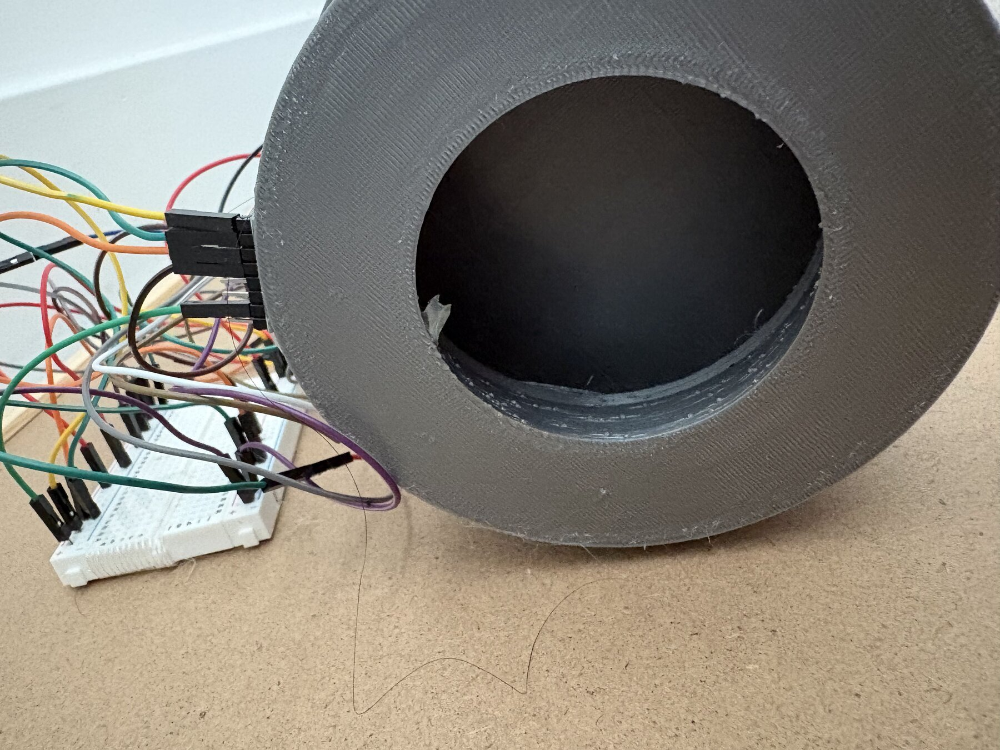
The image shows the engine's exit chamber, including the necessary wiring for the Raspberry Pi Zero and the MPU-6050, which records the machine's vibrations.
Placed one MPU6050 to isolate how the wave signature changes across the geometry instead of averaging it out.

Connected a wireless pressure machine to sweep the pressure range from 30 to 90 PSI using a threaded pressure inlet causing no loss in pressure.
Derived thrust without using a thrust test mechanism, just by filtering low-frequency content below 10 Hz from the same accelerometer signal and applying thrust equals mass times acceleration against the weighed mass of the full assembly.
Ran the CFD streamline study through the injector ring and channel, confirming the rotation of the flow by the angled holes.
Trained an Isolation Forest model on 6,792 logged samples across five pressures, flagging 680 anomalies, 10 percent of the dataset.
Built the full-stack diagnostics dashboard in Flask and JavaScript, with live FFT spectrum, time history, and per-sensor health metrics.
Found that 30 PSI showed the highest turbulence at 20.4 percent, a result the live FFT and severity-index readings confirmed during testing.
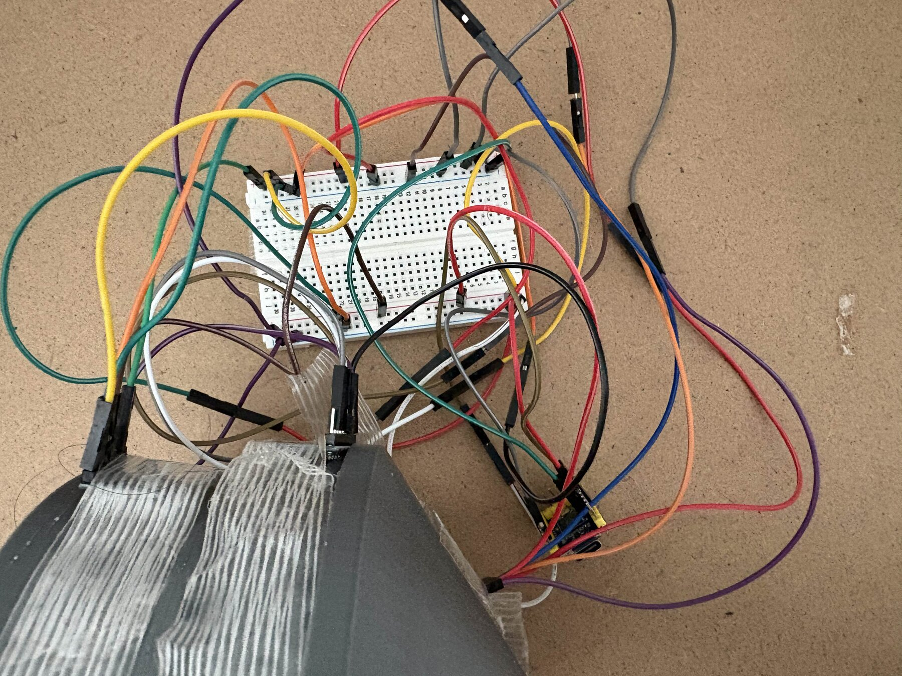
Wired both MPU6050 modules to the same logging board and verified independent, synchronized sample timing on each channel.
Routed and secured the sensor leads against the housing so they survived the full pressure sweep without disconnecting.

Ran the turbulent kinematic viscosity contour to check where the flow through the injector holes was still developing versus fully turbulent.
Used the viscosity field alongside the streamline study to confirm the CFD and the live sensor data were describing the same physical behavior.
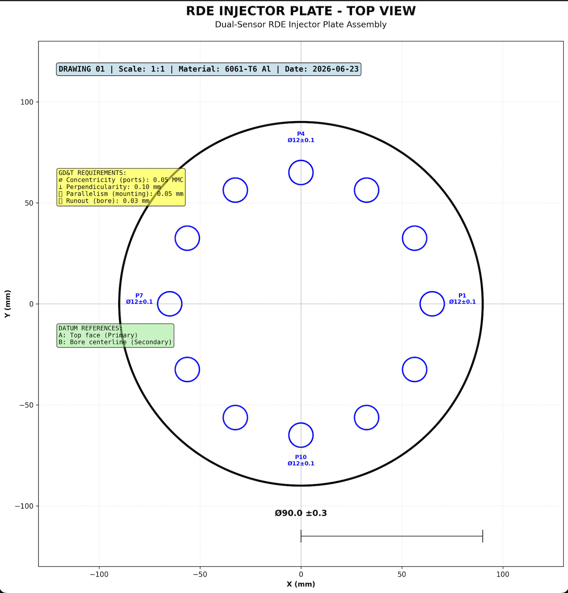


Four GD&T manufacturing drawings (injector plate, nozzle cone, assembly, tolerance stack-up) carry worst-case analysis. An SPC control plan flagged the throat diameter at Cpk equals 1.11, below the 1.33 target, identifying it as the dimension which is most likely to drift out of spec across a print run.
LUNARIS: Lunar Autonomous Navigation and Resource Identification System
Every kilogram of rocket propellant launched from Earth costs between $2,000 and $50,000 depending on destination. Deep space missions must carry all their fuel from Earth, which makes them expensive and infrequent. The fix the space industry is converging on is propellant made from lunar water ice. NASA's Artemis program targets the lunar south pole because craters there hold confirmed water ice, found by the Lunar Prospector spacecraft in 1998.
Finding the best mining site currently takes teams of scientists months of manual data fusion across multiple NASA instruments. No automated tool existed to do this, so I built one. LUNARIS is an open-source pipeline that goes from raw NASA orbital data to ranked candidate sites with economic valuations in under 90 seconds, across five integrated layers: terrain intelligence, ice probability mapping, multi-objective ISRU scoring, autonomous rover coordination, and a cross-planetary transfer model from Moon to Mars.

Built the CNN-based terrain intelligence layer and the ice probability mapping layer on raw NASA orbital instrument data.
Combined terrain safety, ice probability, and solar access into a single multi-objective ISRU score, ranking every candidate site by economic value per square kilometer.

Implemented A* pathfinding across the CNN terrain cost map to route a rover toward the highest-value ISRU sites.
Built the autonomous rover swarm layer to route multiple rovers around the same map without collision.

Simulated multiple rovers operating against the same hazard map at once, checking that the coordination layer kept them from converging on the same path.
Used the swarm simulation to validate that the site rankings from the ISRU scoring layer held up under multi-rover constraints.
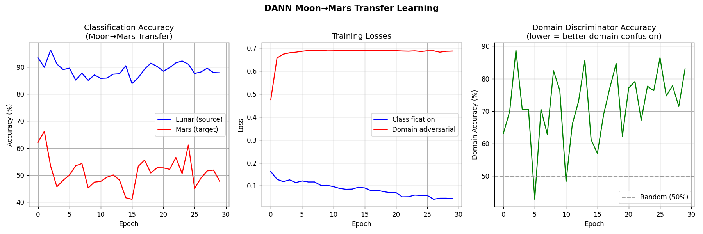
Built a domain-adversarial neural network to transfer the lunar terrain classifier to Mars, training source accuracy up to the high 80s while target accuracy stayed in the 45 to 60 percent range.
This project has been submitted to the Rutgers Innovation Awards 2026 and NASA RASC-AL 2027.
Adjustable Swept Wing and Wind Tunnel Test System
A small-scale low-speed wind tunnel system built to test the aerodynamic behavior of a NACA 4415 airfoil. An Elegoo UNO R3 microcontroller drives two synchronized MG90S servo motors to set the wing's angle of attack, while a BMP280 pressure sensor mounted near 52 percent chord on the upper surface measures static pressure changes during airflow.

Designed and built the wind tunnel test section and mounted the BMP280 pressure sensor at 52 percent chord on the wing's upper surface.
Programmed the Elegoo UNO R3 to drive both MG90S servos in sync, sweeping angle of attack through a repeatable test sequence.
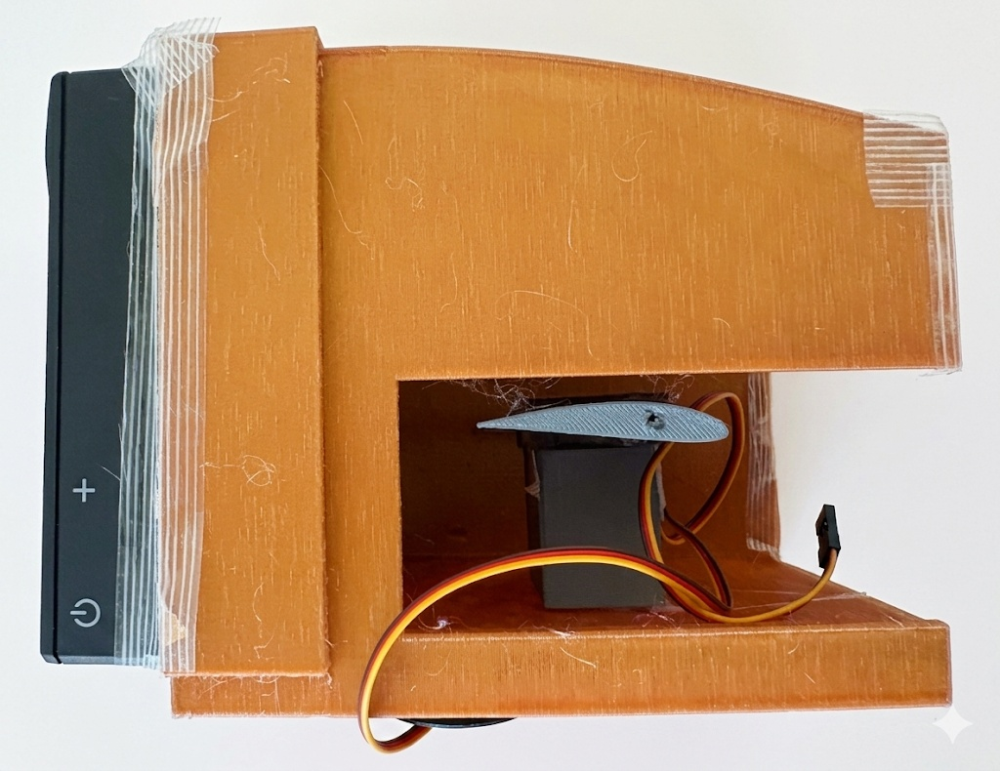
Wrote the analysis pipeline that converts pressure readings, fan gear setting, and NACA 4415 low-Reynolds-number polar data into lift coefficient, drag coefficient, and lift-to-drag ratio.
Built the real-time display output on both the Arduino Serial Monitor and an ST7735 TFT screen so results were visible during the test, not just after.

Captured stall behavior across the full angle of attack sweep and logged it against the live pressure trace.
Produced the low-Reynolds-number drag polar curve directly from test data.

Swept tunnel velocity across multiple fan gear settings and logged lift force against each speed independently.
Cross-checked the velocity-versus-lift trend against the NACA 4415 reference polar to confirm the test rig was measuring real aerodynamic behavior, not sensor noise.
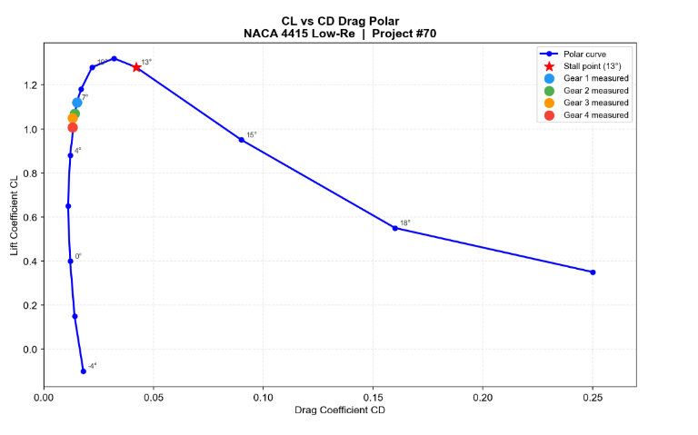
Used the polar curve to identify the angle of attack range where lift-to-drag ratio peaked for this airfoil at low Reynolds number.
Height-Adjustable Desk
A complex mechanical assembly in SolidWorks built using two scissor lifts driven by a linear actuator. Every fastener, bearing, and weld bead is modeled, making this a full mechanical engineering project in sheet metal and hardware.
Modeled the dual scissor-lift mechanism with a lead screw drive, angular contact bearings, and rack and pinion guides, all with tolerances ensured so the assembly works in harmony.
Ran the full motion study in SolidWorks to confirm the lift stayed level and collision-free through the entire contraction-to-extension range.

Detailed the scissor-link arms, pivot joints, bearing interfaces, and lead-screw mounting geometry so the lift mechanism could move symmetrically under load.
Checked the scissor-lift linkage through its contracted and extended positions to verify pivot spacing, platform leveling, and actuator travel before finalizing the design.

Dimensioned every part drawing to the tolerance needed for the lead screw and bearing fits to actually work as designed.
Cross-checked each drawing against the assembly model before release, catching key errors before final assembling.
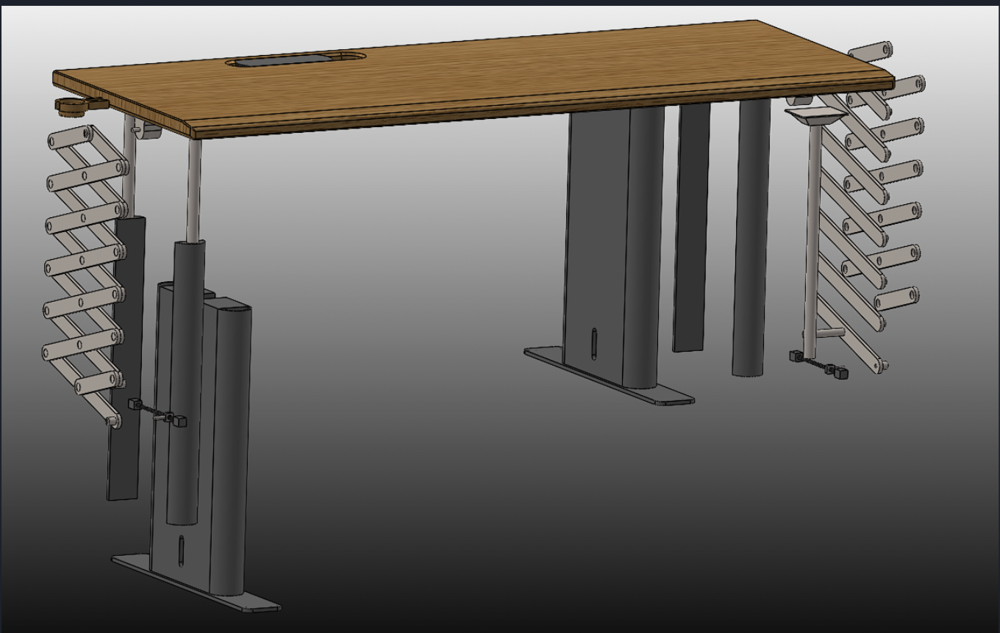
Built the exploded assembly view to show the build order for the scissor mechanism, since several parts had to go in before the frame closed.
Used the exploded view to verify fastener access at every joint before finalizing the design.
Open-Source Modular 6U CubeSat Framework
Working for the Aerospace Career Transformation (ACT) Bootcamp, a workforce development program partnered with 150+ companies, undergoing rigorous gate reviews for design defense. Part of the development of a modular 6U CubeSat framework, covering standardized bus interfaces, deployable structure design, and payload integration specs.